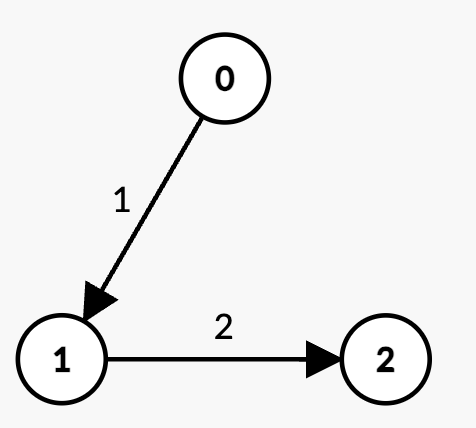
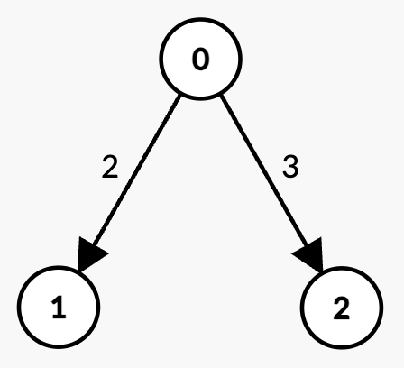
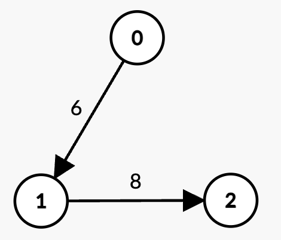

| Category | Difficulty | Likes | Dislikes |
|---|---|---|---|
| Algorithms | Medium | 80 | 10 |
You are given an integer n and a Directed Acyclic Graph (DAG) with n nodes labeled from 0 to n - 1. This is represented by a 2D array edges, where edges[i] = [ui, vi, wi] indicates a directed edge from node ui to vi with weight wi.
You are also given two integers, k and t.
Your task is to determine the maximum possible sum of edge weights for any path in the graph such that:
k edges.t.Return the maximum possible sum of weights for such a path. If no such path exists, return -1.
Example 1:
Input: n = 3, edges = [[0,1,1],[1,2,2]], k = 2, t = 4
Output: 3
Explanation:

k = 2 edges is 0 -> 1 -> 2 with weight 1 + 2 = 3 < t.t is 3.Example 2:
Input: n = 3, edges = [[0,1,2],[0,2,3]], k = 1, t = 3
Output: 2
Explanation:

k = 1 edge:
0 -> 1 with weight 2 < t.0 -> 2 with weight 3 = t, which is not strictly less than t.t is 2.Example 3:
Input: n = 3, edges = [[0,1,6],[1,2,8]], k = 1, t = 6
Output: -1
Explanation:

0 -> 1 with weight 6 = t, which is not strictly less than t.1 -> 2 with weight 8 > t, which is not strictly less than t.t, the answer is -1.
Constraints:
1 <= n <= 3000 <= edges.length <= 300edges[i] = [ui, vi, wi]0 <= ui, vi < nui != vi1 <= wi <= 100 <= k <= 3001 <= t <= 600